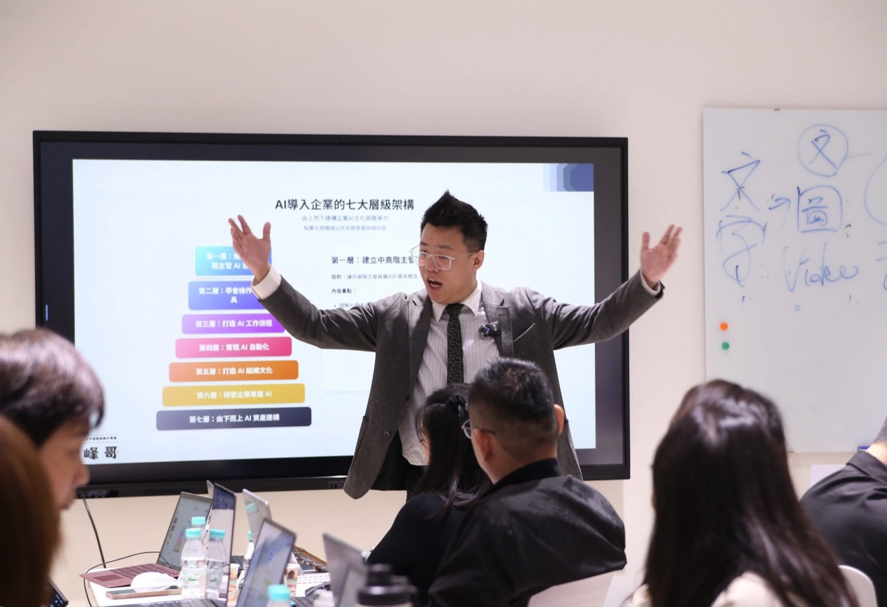

企業 AI 工作提示詞庫
保險業務的 AI 工具箱：文案 × 出圖 × 找資料，一站搞定
專為保險業務打造：左邊選保險文案模板填角色情境一鍵複製，切到出圖有 60 張資訊圖表（填空）＋280 張行銷做圖（固定提示詞），再切到研究模式用 Perplexity／Gemini 查客戶與競品。每張做圖卡內建招攬合規護欄。
入口一：立即產生提示詞
搜尋模板、選分類、填欄位，快速取得可直接貼到 AI 工具的完整指令。
入口二：企業 AI 培訓與陪跑
了解阿峰老師如何協助團隊把 AI 工具導入真實工作流程。
311
提示詞模板
16
分類入口
400+
企業與機構
🔒
用之前先看這兩件事
① 保戶資料一律去識別化：貼進 AI 之前，把姓名、身分證、保單號碼、病名診斷、財務明細換成代號（陳先生、客戶A、P001）。
② 先確認你的公司允許：多數保險公司對「把客戶資料放進外部 AI」有內部規定，用之前請先確認貴公司的資安規範。
本站為教學示範用途，AI 產出內容須經所屬公司主管或法遵單位覆核後才可對外使用；交點文化股份有限公司不對產出內容之合規性負責。
① 保戶資料一律去識別化：貼進 AI 之前，把姓名、身分證、保單號碼、病名診斷、財務明細換成代號（陳先生、客戶A、P001）。
② 先確認你的公司允許：多數保險公司對「把客戶資料放進外部 AI」有內部規定，用之前請先確認貴公司的資安規範。
本站為教學示範用途，AI 產出內容須經所屬公司主管或法遵單位覆核後才可對外使用；交點文化股份有限公司不對產出內容之合規性負責。
一站搞定 · 選工具
🖼️ 這張卡的範例圖會長這樣
↑ 這是長出來的樣子(範例圖)
📝 保險文案
選分類 → 點一張卡 → 填客戶情境 → 一鍵複製,貼到 ChatGPT／Claude／Gemini。業務開發、服務關懷、異議處理話術都在這。
想把這些變成公司專屬 SOP 或部門工具包?
討論企業導入企業 AI 培訓與陪跑服務
工具可以先上手，真正的價值在於把 AI 放進團隊每天會用的工作流程。

黃敬峰（阿峰老師）企業 AI 培訓/陪跑專家
從策略、課程設計到部門實作，協助企業把 AI 應用從「知道」推進到「每天真的用」。
400+
企業與機構輔導經驗
實戰
用工作場景設計練習
陪跑
導入 SOP 與工具包
查看合作企業與機構 Logo


查看授課現場與見證
台灣生物科技公司
為中高階主管帶來 AI 策略課程，深入探討產業應用與未來趨勢。

馬來西亞大學 MBA 課程
分享 AI 商業應用實戰經驗，啟發學員的創新思維與國際視野。

查看學員與課程見證影片
學員怎麼說
取自阿峰老師實際課程的學員見證
📈 台灣長照協會工作坊：用 AI 讓機構評鑑製作省下 90% 的時間
「原本以為 AI 就只有 ChatGPT，上完才發現每個 AI 擅長的領域都不一樣。這堂課像一份懶人包，本來要花一兩個月自己研究，現在很快就知道哪件事該用哪個 AI。」
—— 公開班學員「我自己摸索 AI 一陣子，來上阿峰老師的課才真的「懂」AI、用得更清楚，還學到很多面對未來的知識。阿峰老師的課，100 分！」
—— 表演製作業學員「AI 工具多到不知道怎麼選。阿峰老師把它們很清楚地整合起來，教你建出自己的 AI 工作流，用起來更有效率、更順。」
—— 寶哥《你的人生使用手冊》「老師把「AI 是助手、人才是主導」講得很清楚，讓我知道它能做什麼、不能做什麼。我把今天學的帶回公司跟同事開了分享會。」
—— 專案管理公司學員立即聯繫，開啟 AI 轉型之旅
讓阿峰老師為您量身打造最適合的 AI 導入方案。